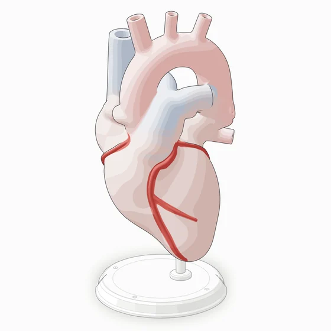
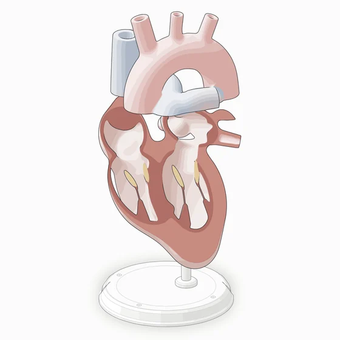
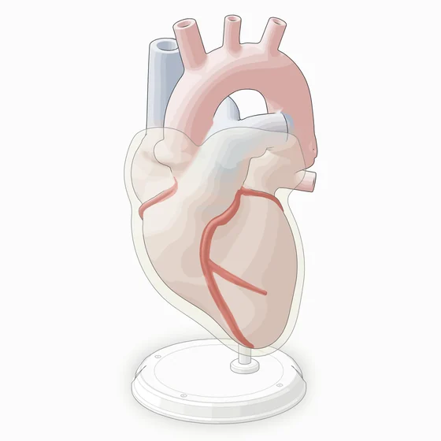
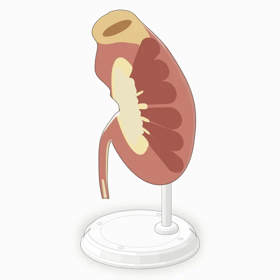
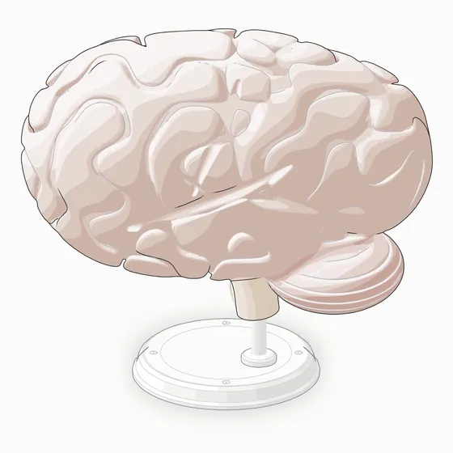
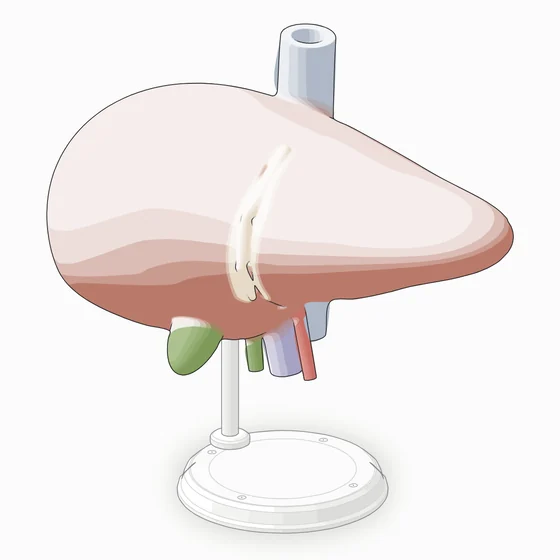

Fig 1Heart



Chambers, auricles, great vessels with cut ends and coronary arteries in one field. Four turned views, a four-chamber section and a view through the pericardium; it beats at the rate in the readout.
← → turn · ↑ ↓ rate Open the heart →Fig 2Kidney

A left kidney with its adrenal gland, whole and opened on its coronal plane: cortex, medullary pyramids, calyces, pelvis, the hilum vessels and the ureter.
front · turned · coronal section Open the kidney →Fig 3Brain

The left hemisphere with gyri and sulci carved into the cortex, the lateral fissure and the central sulcus, the cerebellum with its folia and the brainstem.
lateral · from the front · from behind Open the brain →Fig 4Liver

The right and left lobes, the falciform ligament, the gallbladder, the portal vein, hepatic artery and bile duct at the porta, and the inferior vena cava.
front · from the right · from the left Open the liver →How the figures are made
- Each organ is one signed distance field of fused ellipsoids, balls, round cones and vessels, ray-marched at build time into four-tone SVG shading with tissue colours.
- Each view is a separate camera azimuth, checked by the geometry audit in organic mode; the page crossfades between them.
- Sections are planes carved through the field, with their own cut-face tissue. Membranes are translucent veils drawn last.
- Each page is one self-contained HTML file with no network requests.